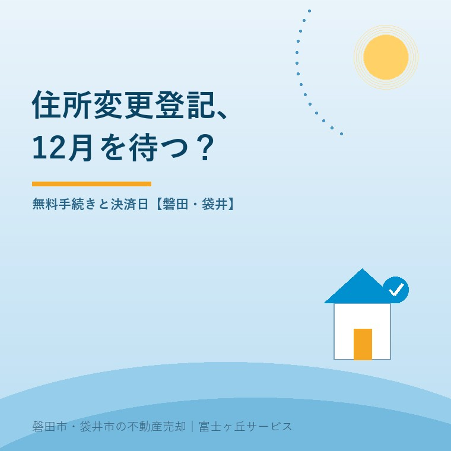

スマート変更登記、相続した家は12月を待つ？
2026年10月4日｜カテゴリ：相続・登記

この記事の要点
相続した家を売りたい。住所変更は12月の無料手続きを待てばいい？
売却を急ぐなら、スマート変更登記の通知を待たず、住所変更登記の申請を検討します。2026年度の意思確認通知は12月中旬以降で、登記完了日ではありません。対象物件と売却日程を司法書士へ確認を。磐田市・袋井市・森町では、介護施設の運営から不動産事業を始めた富士ヶ丘サービスのような地域密着の会社に相談する選択肢があります。
大石浩之（磐田市／不動産業）です。親から相続した家は自分名義にした。その後、自分が引っ越した。家を売ろうとすると、相続登記は済んでいても、所有者の住所と現在の住所を確認する作業が残ります。
2026年10月4日、法務省の「スマート変更登記について」を確認しました。ページは9月30日更新です。無料で住所等を変更する仕組みは助かりますが、12月の通知を待つことと、年内の売却に間に合うことは同じではありません。
12月中旬は、登記完了ではなく通知の開始
法務省が案内する2026年度のスマート変更登記は、2026年3月31日までに検索用情報の登録が完了した人が対象です。意思確認通知は、同年12月中旬以降に順次送られます。12月中旬に全員の住所が書き換わるという日程ではありません。
スマート変更登記とは、法務局が職権で住所等変更登記を行う仕組みです。国内に住所のある個人の場合、検索用情報の申出を基に、住民基本台帳ネットワークシステムで変更を確認します。その後、本人の了解を得て登記へ進みます。
検索用情報は、所有者を照合するために届け出る氏名の振り仮名や生年月日などの情報です。申出をした瞬間に、住所変更登記が終わるわけではありません。申出、登録、通知への回答、登記完了を、一つの「手続き済み」にまとめないことです。
私は、転居のたびに自分で変更登記を申請する負担を減らせる点を評価します。家をしばらく保有する人にとって、費用と手間を抑えられる仕組みは役に立ちます。相続した家の管理を引き受けた人にも、利用条件を知る価値があります。
その上で売却担当者には、「無料で変わります」で説明を止めないでほしいと思います。売主が知りたいのは、今回の売買に必要な時点までに間に合うかです。便利な制度の紹介と、契約日程への責任は、別々に果たす必要があります。
相続登記済みでも、売る物件ごとに登録を確認する
相続登記が終わった家を売る場合も、確認するのは売却対象の土地・建物ごとの検索用情報の登録状況です。法務省は、複数の不動産で登録完了日が分かれる場合、2026年度の対象も分かれると説明しています。
一部の不動産は2026年3月31日までに登録が完了し、残りは4月1日以降だった。こうした場合、2026年度に対象となるのは3月31日までに完了した不動産です。所有者が同じだから、持っているすべての土地と建物が同じ時期に処理されるとは限りません。
| そろえる情報 | 確認する相手・資料 | 売却での使い道 |
|---|---|---|
| 土地の地番・建物の家屋番号 | 登記事項証明書・相続登記の控え | 売る不動産の特定 |
| 検索用情報の登録状況 | 申出の控え・手続きをした司法書士 | 対象年度を確かめる |
| 登記上の住所・現在の住所 | 登記と住所の履歴に関する資料 | 変更登記の準備 |
「相続のとき、全部お願いしたはず」という記憶は、調べ始める手がかりにはなります。しかし、それだけで完了扱いにはしません。司法書士へ依頼したなら、売る予定の物件を示し、検索用情報の申出と登録の状況を問い合わせます。
地番や家屋番号を確かめるには、登記事項証明書の取得方法を参照できます。郵便物が届く住所だけでは土地を特定できない場合があります。家と敷地を一括して「実家」と呼ぶ家族の会話を、登記の単位に直す作業です。
法務省の案内では、各法務局が代表登記所から通知を受け取ってから登記完了まで、対象の登記事項証明書等を取得できません。売却の資料取り寄せと職権登記の時期が重なる可能性もあります。証明書が取れないときは、処理状況を確認して日程を組み直します。
待てる人と、住所変更登記を急ぐ人を分ける
スマート変更登記を待つかどうかは、売却の締切と現在の手続き状況を照合して決めます。法務省の住所等変更登記に関するＱ＆Ａ、第3部Q7は、売却のために住所変更を急ぐ場合、自ら変更登記を申請する必要があると説明しています。
希望するタイミングで、個別にスマート変更登記を行ってもらうことはできません。「買主が決まったので、うちだけ先に無料で」という進め方を、売却日程の前提にしないことです。申出済みでも、この扱いは別に確かめます。
| 所有者の状況 | 考えられる進め方 | 先に確認すること |
|---|---|---|
| 売却時期を決めず保有する | 対象なら通知を待つ選択 | 登録状況・連絡先・対象物件 |
| 2026年内の決済を考える | 自ら申請する段取りを相談 | 司法書士の必要資料と日程 |
| 既に通知へ回答した | 処理状況を確認して調整 | 進行中の職権登記との関係 |
待つ場合も、通知を受け取った後の対応があります。法務省は、通知を発送してから1か月以内に希望する旨を回答するよう求めています。「読んだ日から1か月」と勝手に読み替えず、届いた通知の内容を確かめます。
回答後には内容の確認と審査があります。法務省は完了まで一定期間を要すると案内しており、全国一律の完了日数は示していません。12月中旬に発送、すぐ回答、年内に必ず完了、と日程を足していくことはできません。
通知は、メールアドレスを提供していれば電子メール、提供していなければ書面で届きます。書面の回答を郵送する費用は回答者の負担です。職権登記が無料でも、手元の連絡確認や回答まで誰かが全部代わってくれるわけではありません。
磐田・袋井の売却は、無料より先に決済日を照合する
磐田市・袋井市の相続した家を売るなら、所有者が住む場所と物件の場所を分けて整理します。本人が別の市へ転居していても、売却対象は磐田や袋井の土地・建物です。仲介会社と司法書士には、両方の情報を同じ資料で伝えます。
私はこう考えます。無料の順番待ちと、売買の締切は別だ。無料で済むなら待ちたいという気持ちは当然です。ただ、その希望だけで買主との決済日を決めると、後から予定を動かす負担が家族にも買主にも生じます。先に照合すべきなのは、節約額より手続きの順序です。
私なら、机に登記の控えと売却予定表を並べます。「申出済み」「通知待ち」「完了確認」のどこにいるかを書き、その横へ決済希望日を置きます。これは特定の相談の実話ではなく、私の整理方法の提案です。空欄があれば、そこを司法書士への質問にします。
迷うのは、売却がまだ具体化していない段階で、費用をかけて申請するかどうかです。全員に急いで変更しろとは言いません。待てる人は対象条件を確かめて待つ。購入申込みや決済希望が出ている人は、待つことで支障がないかを先に確かめる。この分け方をします。
登記簿に旧市町村名が残る場合など、住所の表記だけで転居と同じ扱いにしないことも必要です。豊田町の表記が残る登記と住所の確認も手がかりになりますが、今回の変更理由と必要手続きは資料を示して専門家に確認を。
決済とは、残代金の支払いと所有権移転などを進める取引の最終段階です。決済当日に動くお金と段取りと合わせ、登記費用の見積もりも分けて確認します。住所変更の申請を依頼する費用と、売買による登記の費用を混ぜないようにします。
今日するのは、登記と申出の控えを並べること
今日の作業は、売る家の登記資料、検索用情報の申出の控え、現在の住所が分かる資料を一か所に集めることです。相続登記と住所変更登記は役割が違います。まだ親の名義なら、本記事の「通知を待つか」という比較の前に、相続登記の相談から始めます。
- 売却する土地・建物を漏れなく挙げる。
- 検索用情報の登録完了時期を確認する。
- 通知や回答の有無と、決済希望日を司法書士へ伝える。
富士ヶ丘サービスは、介護と不動産を一体で相談し、磐田・袋井の家族が困らない売却を支援します。私は、無料手続きへの申出だけで安心せず、売買の日程に必要な登記の完了を確かめるよう案内します。登記・相続の個別判断は、司法書士などの専門家に確認を。
よくある質問
スマート変更登記、相続した家は12月を待つ？について、判断前に確かめたい点を整理します。
- 12月中旬になれば、自動で住所が書き換わりますか？
- 2026年12月中旬以降に順次送られるのは意思確認通知です。2026年度の対象は、同年3月31日までに検索用情報の登録が完了した不動産です。本人が希望する旨を回答し、その後に確認と審査があります。通知の発送日や回答日を登記完了日として扱わず、売却に必要な登記の時期は法務局や司法書士へ確認を。
- 検索用情報を申し出ていても、自分で変更登記できますか？
- 売却などで住所変更を急ぐ場合、法務省は自ら住所等変更登記を申請する必要があると案内しています。希望日に合わせた個別のスマート変更登記はできません。申出済みであることと、意思確認通知の有無を司法書士に伝え、現在の手続き状況を整理します。既に職権登記が進行しているときの対応も専門家に確認を。
- スマート変更登記で、亡くなった親の名義も変わりますか？
- スマート変更登記は、所有者の住所や氏名などを変更する仕組みです。亡くなった親から相続人へ所有権を移す相続登記そのものを自動化する制度ではありません。本記事は相続登記を終え、自分名義にした後に転居した人を想定しています。まだ親の名義なら、相続登記と売却準備の順序を司法書士などの専門家に確認を。

この記事を書いた人：大石浩之（磐田市／不動産業・宅地建物取引士）
富士ヶ丘サービス株式会社。介護施設の運営から不動産事業を始め、磐田市・袋井市・森町で、介護と相続、実家の売却を一体で相談できる窓口を設けています。家族が困らない売却のため、資料と現地の条件を一件ずつ整理します。著者プロフィール
本記事は2026年10月4日時点の公開情報と筆者の意見です。制度・数値・手続き・契約条件は変更されることがあります。税務・登記・相続・重要事項説明・契約などの個別判断は、税理士・司法書士・弁護士などの専門家に確認を。